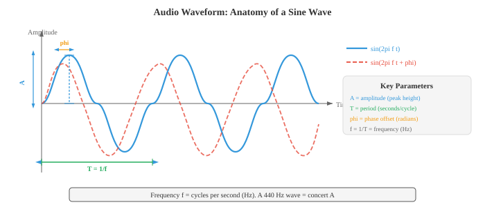
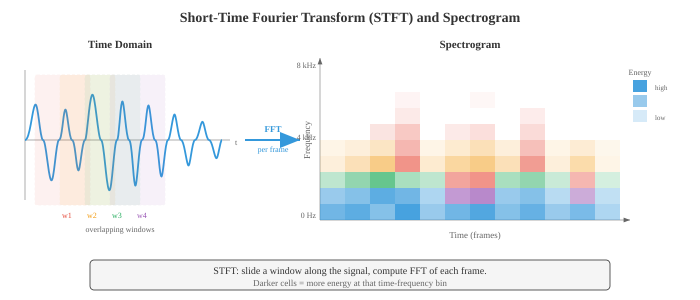

数字信号处理¶
一句话总结：数字信号处理把原始音频波形转成模型能吃的结构化表示，涵盖采样、傅立叶变换、频谱图、梅尔滤波器组、MFCC 与加窗全流程。
🗺️ 本章导览¶
- 本章覆盖音频与语音：数字信号处理 (Digital Signal Processing, DSP) → 自动语音识别 (Automatic Speech Recognition, ASR) → 文本到语音 (Text-to-Speech, TTS) → 说话人分析 → 源分离
- 01. 数字信号处理 (本节)：采样、傅立叶变换、频谱、滤波
- 02. 自动语音识别: HMM、CTC、RNN-T、Whisper 家族
- 03. 文本到语音与声音: WaveNet、Tacotron、VITS、Diffusion TTS
- 04. 说话人与音频分析：说话人辨识、日志化、活动检测
- 05. 源分离与降噪：主动降噪、Demucs、语音增强
数字信号处理 (Digital Signal Processing, DSP) 把原始音频波形转换成机器学习模型能学的结构化表示。 本节涵盖声音物理、采样与量化、傅立叶变换 (离散傅立叶变换 DFT、快速傅立叶变换 FFT)、频谱图、梅尔滤波器组、梅尔频率倒谱系数 (MFCC) 与加窗——这是所有语音和音频 AI 的特征提取流水线.
-
声音 是一种压力波，通过介质 (空气、水、固体) 传播。 一个振动的物体 (声带、吉他弦、扬声器锥盆) 推挤空气分子，制造出高压 (压缩) 与低压 (稀疏) 交替的区域。
-
这些压力起伏在空气中以大约 343 m/s 的速度向外传播，到达你的耳朵，让鼓膜跟着振动，再转导成神经信号。
-
把声音想象成往平静池塘扔一块石头：石头是振动源，涟漪是压力波，浮在水面上一颠一颠的软木塞就是麦克风或鼓膜，它对波的到达做出反应。
-
软木塞颠起的高度就是振幅，每秒颠多少次就是频率，波到来时它是从颠动的顶端还是底端开始，决定了相位.
-
波形 是压力 (或者经过麦克风把声转成电信号后的电压) 随时间变化的图像。 最简单的波形是纯音，也就是一条正弦曲线:
-
其中:
- \(A\) 是振幅 (偏离零的峰值，决定响度),
- \(f\) 是频率，单位赫兹 Hz (每秒周期数，决定音高),
- \(\phi\) 是相位，单位弧度 (波的时间偏移).
-
周期 是 \(T = 1/f\)，也就是一个完整周期的时长。

-
振幅 决定我们感知到的响度。 振幅翻倍，功率翻四倍 (因为功率正比于振幅的平方).
-
人耳能覆盖的振幅范围非常大，所以用对数刻度来表示：分贝 (decibel, dB). 声压级公式是:
-
其中 \(A_\text{ref}\) 是参考振幅 (通常取听觉阈值 \(20 \mu\text{Pa}\)). 耳语约 30 dB，正常对话 60 dB，摇滚现场 110 dB. 每增加 6 dB 大致对应振幅翻倍；每增加 10 dB 大致对应感知响度翻倍。 这里用的对数就是第 03 章那个函数。
-
频率 决定音高。 低频 (20–250 Hz) 听起来是低音；高频 (2000–20000 Hz) 听起来是高音。 人耳听力范围大约 20 Hz 到 20 kHz. 音会 A (Concert A) 是 440 Hz. 频率翻倍，音高升高一个八度 (octave).
-
大多数自然声音都不是纯音，而是许多频率的复杂混合。 这就是为什么钢琴和小提琴弹同一个音，听起来还是不一样：它们的基频 (fundamental frequency) 相同，但谐波 (harmonics，基频的整数倍) 及其相对振幅 (也就是音色, timbre) 各异。
-
相位 决定波从周期中的哪个位置起步。 两个振幅频率相同但相位不同的波，可以相长干涉 (相位对齐，振幅相加)，也可以相消干涉 (相位相反，振幅抵消).
-
相位在立体声与波束形成里至关重要，但在很多语音处理流水线中被大量丢弃——因为人耳对音高和音色的感知基本与相位无关。
-
真实世界的音频信号是关于时间的连续函数，但计算机只能处理离散数字。 采样 (sampling) 把连续信号变成离散序列，做法是每隔固定时间测一次信号的值。
-
采样率 \(f_s\) 就是每秒测多少次。 CD 音频用 \(f_s = 44{,}100\) Hz；电话用 8000 Hz；现代语音模型通常用 16000 Hz.
-
奈奎斯特-香农采样定理 (Nyquist-Shannon sampling theorem) 说：一个连续信号能被它的采样值完美重建，当且仅当采样率至少是信号中最高频率的两倍:
-
频率 \(f_s / 2\) 叫奈奎斯特频率. 如果信号里有超过奈奎斯特频率的成分，这些成分会折叠回有效范围，变成假的低频分量。 这种现象叫混叠 (aliasing). 混叠不可逆——一旦发生，原始信号就再也从采样值里恢复不出来了。
-
日常里最好懂的混叠例子是电影里的"车轮倒转"效应：车轮转速刚好略高于帧率，摄像机没跟上，看上去反而在慢慢倒转。 音频里，一个 15 kHz 的音在 16 kHz 采样 (\(f_\text{Nyquist} = 8\) kHz) 下会混叠成 \(16 - 15 = 1\) kHz，完全变成另一个音高。

-
为了防止混叠，抗混叠滤波器 (anti-aliasing filter，低通滤波器) 会在采样前先把 \(f_s/2\) 以上的频率全部滤掉。 这一步由模数转换器 (Analog-to-Digital Converter, ADC) 硬件在信号数字化之前完成。
-
量化 (quantisation) 把每个连续值的采样映射到有限个离散电平中最近的一个。 一个 \(n\) 位量化器有 \(2^n\) 个电平。 CD 音频用 16 位量化 (\(2^{16} = 65{,}536\) 个电平)；电话经常用 8 位，再配合 \(\mu\) 律或 A 律的压扩 (companding，一种非线性映射，把更多电平分给小振幅，更贴合人耳感知). 量化会引入量化噪声，本质是舍入误差，方差为 \(\Delta^2/12\)，其中 \(\Delta\) 是电平之间的步长。
-
时域分析 直接从波形里抽特征，不做变换。 这类特征简单、算得快，能反映信号的基本性质。
-
一帧 \(N\) 个样本的能量 (energy) 衡量整体响度:
-
语音段能量高，静音段能量低。 能量就是第 01 章里的 \(\ell_2\) 范数的平方，应用到信号向量上。
-
过零率 (Zero-Crossing Rate, ZCR) 数一帧里信号变号的次数:
-
ZCR 高说明高频或噪声成分多；ZCR 低说明低频或有浊音 (voiced speech，声带周期性振动的语音). ZCR 是一种粗糙的频率估计：\(f\) Hz 的纯音每秒过零 \(2f\) 次。
-
自相关 (autocorrelation) 衡量信号和它自身延迟版本的相似度:
-
在 \(k = 0\) 时，自相关等于能量。 对周期信号来说，自相关在滞后等于周期及其倍数的位置有峰。 这是基音检测 (pitch detection) 的标准做法：找 \(R[k]\) 在 \(k=0\) 之后的第一个显著峰，基音就是 \(f_s / k_\text{peak}\). 自相关和第 01 章的点积一脉相承：\(R[k]\) 就是信号与其 \(k\) 步平移版本的点积。
-
频域分析 揭示信号的谱内容——这是在波形里看不出来的信息。 核心工具是离散傅立叶变换 (Discrete Fourier Transform, DFT)，它把 \(N\) 个样本的信号分解成 \(N\) 个复数值的频率分量:
-
每个 \(X[k]\) 是一个复数，它的模 \(|X[k]|\) 给出 \(f_k = k \cdot f_s / N\) Hz 处频率分量的振幅，它的辐角 \(\angle X[k]\) 给出相位偏移。 DFT 是一次基变换 (change of basis)：从时域基 (单位脉冲) 换到频域基 (复指数)——这正是第 02 章基这个概念的直接应用。 DFT 可以写成矩阵乘法 \(\mathbf{X} = W \mathbf{x}\)，其中 \(W\) 是 \(N \times N\) 的 DFT 矩阵，元素为 \(W_{kn} = e^{-j2\pi kn/N}\).
-
快速傅立叶变换 (Fast Fourier Transform, FFT) 是一种算法，用 \(O(N \log N)\) 次运算完成 DFT，而不是朴素的 \(O(N^2)\). 它把问题递归地拆成偶数下标和奇数下标两个子问题 (即 Cooley-Tukey 算法). 正是这份加速让实时频谱分析成为可能。 FFT 是整个计算领域最重要的算法之一。
-
功率谱 \(|X[k]|^2\) 展示能量在各频率上的分布。 幅度谱 \(|X[k]|\) 展示振幅。 把这些画出来，就能看清哪些频率主导了信号：元音在基频的整数倍处有很强的谐波；摩擦音 (比如 "s") 则在高频区有一片宽宽的能量。
-
频谱图 (spectrogram) 是信号频率内容随时间变化的可视化。 做法是把信号切成短的重叠帧，对每一帧算 FFT，把得到的幅度谱一列列拼起来。 横轴是时间，纵轴是频率，每个点的颜色 (或亮度) 表示幅度。 频谱图是音频处理里最重要的可视化，没有之一。

- 梅尔刻度 (mel scale) 是一种感知频率刻度，反映了人类如何感知音高。 人类把频率的相同比例感知为音高的相同间隔 (就像我们把强度的相同比例感知为响度的相同间隔). 1000 Hz 以下，梅尔刻度近似线性；1000 Hz 以上，变得近似对数:
-
反函数是 \(f = 700(10^{m/2595} - 1)\). 梅尔刻度也是音乐半音在对数频率轴上等间距的原因：A4 (440 Hz) 到 A5 (880 Hz), A5 到 A6 (1760 Hz)，听起来都是"高了一个八度"，尽管 Hz 差值分别是 440 和 880.
-
梅尔滤波器组 (mel filterbank) 是一组三角形带通滤波器，在梅尔刻度上均匀分布。 每个滤波器覆盖一段频率，把该段的谱能量求和，输出一个数。 典型语音系统用 40–80 个梅尔滤波器。 低频滤波器窄 (在我们感知敏感的地方保留高频率分辨率)，高频滤波器宽 (在我们感知迟钝的地方降低分辨率). 这刚好模仿了人耳耳蜗的频率分辨机制。

-
梅尔频率倒谱系数 (Mel-Frequency Cepstral Coefficients, MFCC) 是语音与音频的经典特征表示。 它把梅尔谱压缩成少量去相关的系数，抓住谱包络的形状 (谱包络编码声道构型，从而对应音素身份)，同时丢掉细致的谱细节 (那些编码基音和相位的东西).
-
MFCC 流水线:
- 预加重：施加一阶高通滤波器 \(y[n] = x[n] - \alpha x[n-1]\) (通常 \(\alpha = 0.97\))，增强被声道衰减的高频。
- 分帧：把信号切成重叠帧 (通常帧长 25 ms，帧移 10 ms).
- 加窗：每帧乘一个窗函数 (Hamming 汉明窗)，减小频谱泄漏 (下文详述).
- FFT：计算每个加窗帧的功率谱。
- 梅尔滤波器组：把三角形梅尔滤波器组作用到功率谱上，得到梅尔频带能量。
- 取对数：对梅尔频带能量取对数。 对数压缩动态范围，把 (谱分量的) 乘法变加法，也贴合人耳的响度感知。
- DCT：对对数梅尔能量做离散余弦变换 (Discrete Cosine Transform, DCT). DCT 把梅尔频带去相关 (相邻频带高度相关)，并把能量压缩到前几个系数里。 保留前 13 个系数 (MFCC-0 到 MFCC-12).

-
第 7 步的 DCT 本质上是"频谱的傅立叶变换" (因此叫 倒谱 cepstrum，就是 spectrum 的字母重排). 低阶倒谱系数捕捉宽的谱形 (声道共振，叫 共振峰 formants)，高阶系数捕捉细谱细节 (基音谐波). 只保留前 13 个，就等于保留共振峰、丢掉基音细节。
-
Delta 与 Delta-Delta MFCC (MFCC 的一阶和二阶时间差分，通过相邻帧的有限差分计算) 捕捉谱形的动态，补进时序上下文。 一个完整的 MFCC 特征向量往往是 39 维：13 个静态 + 13 个 delta + 13 个 delta-delta.
-
现代神经网络模型 (第 06 章) 已经基本用学习到的特征替代了 MFCC：对数梅尔频谱 (即第 6 步的输出，跳过 DCT) 是深度学习自动语音识别 (Automatic Speech Recognition, ASR) 和音频分类的标准输入。 模型自己学去相关。 但 MFCC 在低资源场景、经典 ML 流水线，以及理解信号处理基础时依然重要。
-
加窗 (windowing) 是在做 FFT 之前，把信号帧乘上一个平滑窗函数。 不加窗的话，FFT 会假设这一帧无限重复，帧的突然开始和结束会造成人为不连续，把能量摊到所有频率上，这种伪影叫频谱泄漏 (spectral leakage).
-
矩形窗 \(w[n] = 1\) 对所有 \(n\)：不做削减，泄漏最大，但主瓣最窄 (给定帧长下频率分辨率最好). 实际中很少用。
-
汉明窗 (Hamming window): \(w[n] = 0.54 - 0.46 \cos(2\pi n / (N-1))\). 边缘削减到近似为零，大幅减少泄漏。 语音处理的标准选择。
-
汉宁窗 (Hann window，也叫 Hanning): \(w[n] = 0.5 - 0.5 \cos(2\pi n / (N-1))\). 边缘正好削减到零。 和 Hamming 很像，旁瓣压制略好一点。
-
布莱克曼窗 (Blackman window): \(w[n] = 0.42 - 0.5 \cos(2\pi n / (N-1)) + 0.08 \cos(4\pi n / (N-1))\). 旁瓣压制更好，但主瓣更宽 (频率分辨率更差). 当旁瓣伪影特别麻烦时才用。
-
存在一个基本权衡：泄漏更少的窗主瓣更宽，也就分不开两个靠得很近的频率。 这就是频谱分辨率 vs. 泄漏权衡，是第 03 章测不准原理的一个推论。
-
叠加相加 (Overlap-Add, OLA) 是从加窗、处理过的帧重建信号的技术。 帧之间重叠 (通常 50–75%)，处理完之后把加窗输出相加。 如果窗和重叠选得对 (比如 Hann 窗配 50% 重叠)，重叠的窗加起来是常数，就能完美重建。 这在任何基于帧的音频修改 (降噪、变调、变速) 里都不可或缺。
-
短时傅立叶变换 (Short-Time Fourier Transform, STFT) 是频谱图背后的正式框架。 它对信号的每一个加窗帧做 DFT:
-
其中 \(m\) 是帧编号，\(H\) 是帧移 (相邻帧间的样本数), \(w[n]\) 是窗函数，\(N\) 是 FFT 大小。 输出是一个二维复数矩阵：信号的时频表示 (time-frequency representation).
-
STFT 体现了一个根本性的时频权衡:
- 长帧 (大 \(N\))：频率分辨率高 (能分辨靠得很近的频率)，但时间分辨率差 (说不清频率什么时候变的).
- 短帧 (小 \(N\))：时间分辨率高，但频率分辨率差。
- 时间分辨率和频率分辨率的乘积有下界：\(\Delta t \cdot \Delta f \geq \frac{1}{4\pi}\). 这叫 Gabor 极限，是物理里第 03 章海森堡测不准原理在信号处理中的对应。
-
典型的语音 STFT 参数：帧长 25 ms (16 kHz 下 \(N = 400\))，帧移 10 ms (\(H = 160\))，汉明窗，512 点 FFT (从 400 补零到 512，一为效率，二为更平滑的频谱插值).
-
滤波 (filtering) 通过放大某些频率、衰减另一些频率来改变信号的频率内容。 滤波器 (filter) 是一个吃输入信号、吐输出信号的系统。 滤波器的特征由频率响应 \(H(f)\) 刻画，它描述每个频率被施加的增益和相移。
-
低通滤波器 (low-pass filter)：让低于截止频率 \(f_c\) 的频率通过，衰减更高的。 去掉高频噪声和细节。 采样前的抗混叠滤波器就是低通。
-
高通滤波器 (high-pass filter)：让高于 \(f_c\) 的频率通过，衰减更低的。 去掉低频轰鸣和直流偏置。 MFCC 提取里的预加重滤波器 (\(y[n] = x[n] - 0.97 x[n-1]\)) 就是一个简单高通。
-
带通滤波器 (band-pass filter)：只让 \([f_1, f_2]\) 范围内的频率通过，范围外衰减。 梅尔滤波器组里的每个三角形都是一个带通。
-
带阻 (陷波) 滤波器 (band-stop / notch filter)：衰减某个特定的窄频段。 用来去除特定干扰 (比如 50/60 Hz 的市电嗡声).
-
有限脉冲响应 (Finite Impulse Response, FIR) 滤波器把每个输出样本算成当前和过去输入样本的加权和:
-
权重 \(b_k\) 叫滤波器系数 (也叫 抽头 taps). 滤波器阶数是 \(M\). FIR 滤波器永远稳定 (输出不会发散)，且可以设计成完美线性相位 (所有频率延迟相同，波形形状不失真). 缺点是要做出陡峭的截止就得堆抽头 (大 \(M\))，计算量大。 输出就是输入与系数向量的卷积——正是第 06 章那个一维卷积操作。
-
无限脉冲响应 (Infinite Impulse Response, IIR) 滤波器带反馈：输出同时依赖过去的输入和过去的输出:
-
反馈项 \(a_k\) 造出一个递归结构，其脉冲响应在理论上无限长。 用比 FIR 少得多的系数就能做到陡峭截止，但可能不稳定 (如果传递函数的极点落在单位圆外，输出会无限发散，这是 \(z\) 变换里的概念). 相位也非线性，会扭曲波形形状。 经典滤波器设计 (Butterworth、Chebyshev、椭圆) 都是 IIR.
-
一个离散时间滤波器的传递函数 (transfer function) 由 \(z\) 变换给出:
-
分子的根叫零点 (zeros)，分母的根叫极点 (poles). 极零点图完整地刻画了滤波器的行为。 靠近单位圆的极点放大附近频率，靠近单位圆的零点衰减附近频率。 FIR 滤波器只有零点 (分母是 1). 这一点连着第 02 章的特征值与第 03 章的求根。
-
卷积定理：时域的卷积等于频域的逐元素乘法。 也就是说，滤波既可以直接把信号和滤波器冲激响应做卷积，也可以把两者的傅立叶变换相乘再逆变换。 长滤波器用频域做更快：\(O(N \log N)\) 对比 \(O(NM)\).
-
逆 STFT (inverse STFT, iSTFT) 从 STFT 表示重建时域信号。 任何在频域修改音频的系统 (降噪、源分离、语音转换) 都靠它。 重建走的是叠加相加:
-
分母对窗的重叠做归一化，保证合成窗与分析窗一致、重叠足够时能完美重建。
-
语音 DSP 链条小结：原始音频以 16 kHz 采样，预加重，切成 25 ms 的汉明加窗帧、帧移 10 ms，每帧 FFT 变换、过梅尔滤波器组、取对数，然后要么保留为对数梅尔特征 (给神经网络模型)，要么再做 DCT 得到 MFCC (给经典模型). 整条链条把 1D 时域信号变成一个 2D 时频表示，供下游机器学习使用——那就是文件 02 的主题。
Coding Tasks (use CoLab or notebook)¶
-
生成一个正弦波，用不同采样率采样，演示混叠现象。 把连续信号、正确采样版本、欠采样 (混叠) 版本都画出来。
import jax.numpy as jnp import matplotlib.pyplot as plt # 参数 f_signal = 5.0 # 5 Hz 信号 duration = 1.0 # 1 秒 # "连续" 信号 (用很高的采样率近似) t_cont = jnp.linspace(0, duration, 10000) x_cont = jnp.sin(2 * jnp.pi * f_signal * t_cont) # 正确采样 (fs = 50 Hz, 远高于奈奎斯特 = 10 Hz) fs_good = 50 t_good = jnp.arange(0, duration, 1.0 / fs_good) x_good = jnp.sin(2 * jnp.pi * f_signal * t_good) # 欠采样 (fs = 7 Hz, 低于奈奎斯特 = 10 Hz) -> 产生混叠 fs_bad = 7 t_bad = jnp.arange(0, duration, 1.0 / fs_bad) x_bad = jnp.sin(2 * jnp.pi * f_signal * t_bad) # 混叠频率: |f_signal - fs_bad| = |5 - 7| = 2 Hz f_alias = abs(f_signal - fs_bad) x_alias_cont = jnp.sin(2 * jnp.pi * f_alias * t_cont) fig, axes = plt.subplots(3, 1, figsize=(12, 9)) # 图 1: 原始信号 axes[0].plot(t_cont, x_cont, color='#3498db', linewidth=1.5, label=f'Original {f_signal} Hz') axes[0].set_title(f'Original {f_signal} Hz Signal') axes[0].set_xlabel('Time (s)'); axes[0].set_ylabel('Amplitude') axes[0].legend(); axes[0].grid(True, alpha=0.3) # 图 2: 正确采样 axes[1].plot(t_cont, x_cont, color='#3498db', linewidth=1, alpha=0.4, label='Original') axes[1].stem(t_good, x_good, linefmt='#27ae60', markerfmt='o', basefmt='k-', label=f'Sampled at {fs_good} Hz (above Nyquist)') axes[1].set_title(f'Proper Sampling: fs = {fs_good} Hz > 2 x {f_signal} Hz') axes[1].set_xlabel('Time (s)'); axes[1].set_ylabel('Amplitude') axes[1].legend(); axes[1].grid(True, alpha=0.3) # 图 3: 混叠采样 axes[2].plot(t_cont, x_cont, color='#3498db', linewidth=1, alpha=0.4, label='Original') axes[2].stem(t_bad, x_bad, linefmt='#e74c3c', markerfmt='o', basefmt='k-', label=f'Sampled at {fs_bad} Hz (below Nyquist)') axes[2].plot(t_cont, x_alias_cont, color='#f39c12', linewidth=1.5, linestyle='--', label=f'Aliased signal appears as {f_alias} Hz') axes[2].set_title(f'Aliased Sampling: fs = {fs_bad} Hz < 2 x {f_signal} Hz') axes[2].set_xlabel('Time (s)'); axes[2].set_ylabel('Amplitude') axes[2].legend(); axes[2].grid(True, alpha=0.3) plt.tight_layout(); plt.show() -
对由多个正弦分量组成的信号计算并可视化 FFT. 展示幅度谱并识别其中的分量频率。
import jax.numpy as jnp import matplotlib.pyplot as plt # 构造复合信号: 220 Hz + 440 Hz + 880 Hz (A3 + A4 + A5) fs = 8000 # 8 kHz 采样率 duration = 0.1 # 100 ms t = jnp.arange(0, duration, 1.0 / fs) n_samples = len(t) # 三个频率分量, 振幅各异 x = 1.0 * jnp.sin(2 * jnp.pi * 220 * t) + \ 0.6 * jnp.sin(2 * jnp.pi * 440 * t) + \ 0.3 * jnp.sin(2 * jnp.pi * 880 * t) # 计算 FFT X = jnp.fft.fft(x) freqs = jnp.fft.fftfreq(n_samples, d=1.0 / fs) magnitude = jnp.abs(X) / n_samples # 归一化 # 只画正频率部分 pos_mask = freqs >= 0 freqs_pos = freqs[pos_mask] mag_pos = magnitude[pos_mask] * 2 # 乘 2, 补上负频率的能量 fig, axes = plt.subplots(2, 1, figsize=(12, 7)) # 时域 axes[0].plot(t * 1000, x, color='#3498db', linewidth=1) axes[0].set_title('Composite Signal: 220 Hz + 440 Hz + 880 Hz') axes[0].set_xlabel('Time (ms)'); axes[0].set_ylabel('Amplitude') axes[0].grid(True, alpha=0.3) # 频域 axes[1].plot(freqs_pos, mag_pos, color='#e74c3c', linewidth=1.5) axes[1].set_title('Magnitude Spectrum (FFT)') axes[1].set_xlabel('Frequency (Hz)'); axes[1].set_ylabel('Magnitude') axes[1].set_xlim(0, 1500) # 标注峰值 for f_peak, amp in [(220, 1.0), (440, 0.6), (880, 0.3)]: axes[1].annotate(f'{f_peak} Hz', xy=(f_peak, amp), fontsize=10, ha='center', va='bottom', color='#9b59b6', arrowprops=dict(arrowstyle='->', color='#9b59b6')) axes[1].grid(True, alpha=0.3) plt.tight_layout(); plt.show() -
用 JAX 从零搭建完整的 MFCC 流水线：预加重、分帧、加窗、FFT、梅尔滤波器组、取对数、DCT. 把梅尔滤波器组与最终 MFCC 用热力图可视化。
import jax import jax.numpy as jnp import matplotlib.pyplot as plt # --- 生成一段类似语音的合成信号 --- key = jax.random.PRNGKey(42) fs = 16000 duration = 1.0 t = jnp.arange(0, duration, 1.0 / fs) # 模拟浊音: 基频 + 谐波, 振幅逐次衰减 f0 = 150.0 # 基频 x = sum(jnp.sin(2 * jnp.pi * f0 * k * t) / k for k in range(1, 8)) # 加一点噪声 x = x + 0.1 * jax.random.normal(key, t.shape) x = x / jnp.max(jnp.abs(x)) # 归一化 # --- Step 1: 预加重 --- alpha = 0.97 x_pre = jnp.concatenate([x[:1], x[1:] - alpha * x[:-1]]) # --- Step 2: 分帧 --- frame_len = int(0.025 * fs) # 25 ms = 400 样本 hop_len = int(0.010 * fs) # 10 ms = 160 样本 n_frames = (len(x_pre) - frame_len) // hop_len + 1 frames = jnp.stack([x_pre[i * hop_len : i * hop_len + frame_len] for i in range(n_frames)]) # --- Step 3: 汉明窗 --- hamming = 0.54 - 0.46 * jnp.cos(2 * jnp.pi * jnp.arange(frame_len) / (frame_len - 1)) windowed = frames * hamming # --- Step 4: FFT --- n_fft = 512 spectra = jnp.fft.rfft(windowed, n=n_fft) power_spectra = jnp.abs(spectra) ** 2 / n_fft # --- Step 5: 梅尔滤波器组 --- n_mels = 40 f_min, f_max = 0.0, fs / 2.0 def hz_to_mel(f): return 2595 * jnp.log10(1 + f / 700) def mel_to_hz(m): return 700 * (10 ** (m / 2595) - 1) mel_min = hz_to_mel(f_min) mel_max = hz_to_mel(f_max) mel_points = jnp.linspace(mel_min, mel_max, n_mels + 2) hz_points = mel_to_hz(mel_points) freq_bins = jnp.floor((n_fft + 1) * hz_points / fs).astype(jnp.int32) n_freqs = n_fft // 2 + 1 filterbank = jnp.zeros((n_mels, n_freqs)) for m in range(n_mels): f_left = freq_bins[m] f_center = freq_bins[m + 1] f_right = freq_bins[m + 2] # 上升边 for k in range(int(f_left), int(f_center)): if f_center != f_left: filterbank = filterbank.at[m, k].set((k - f_left) / (f_center - f_left)) # 下降边 for k in range(int(f_center), int(f_right)): if f_right != f_center: filterbank = filterbank.at[m, k].set((f_right - k) / (f_right - f_center)) # 应用滤波器组 mel_spectra = jnp.dot(power_spectra, filterbank.T) # --- Step 6: 取对数 --- log_mel = jnp.log(mel_spectra + 1e-10) # --- Step 7: DCT (type-II) --- n_mfcc = 13 n_mel_channels = log_mel.shape[1] dct_matrix = jnp.zeros((n_mfcc, n_mel_channels)) for i in range(n_mfcc): for j in range(n_mel_channels): dct_matrix = dct_matrix.at[i, j].set( jnp.cos(jnp.pi * i * (j + 0.5) / n_mel_channels) ) mfccs = jnp.dot(log_mel, dct_matrix.T) # --- 可视化 --- fig, axes = plt.subplots(3, 1, figsize=(14, 11)) # 梅尔滤波器组 freq_axis = jnp.linspace(0, fs / 2, n_freqs) for m in range(n_mels): color = '#3498db' if m % 2 == 0 else '#e74c3c' axes[0].plot(freq_axis, filterbank[m], color=color, alpha=0.6, linewidth=0.8) axes[0].set_title(f'Mel Filterbank ({n_mels} filters)') axes[0].set_xlabel('Frequency (Hz)'); axes[0].set_ylabel('Weight') axes[0].grid(True, alpha=0.3) # 对数梅尔频谱图 im1 = axes[1].imshow(log_mel.T, aspect='auto', origin='lower', extent=[0, duration, 0, n_mels], cmap='viridis') axes[1].set_title('Log-Mel Spectrogram') axes[1].set_xlabel('Time (s)'); axes[1].set_ylabel('Mel Band') plt.colorbar(im1, ax=axes[1], label='Log Energy') # MFCC im2 = axes[2].imshow(mfccs.T, aspect='auto', origin='lower', extent=[0, duration, 0, n_mfcc], cmap='coolwarm') axes[2].set_title(f'MFCCs (first {n_mfcc} coefficients)') axes[2].set_xlabel('Time (s)'); axes[2].set_ylabel('MFCC Index') plt.colorbar(im2, ax=axes[2], label='Coefficient Value') plt.tight_layout(); plt.show() -
实现 FIR 低通与高通滤波器，可视化它们在同时含低频与高频分量的信号上的效果。 时域与频域两个视角都要展示。
import jax import jax.numpy as jnp import matplotlib.pyplot as plt # 构造一个含低频 (100 Hz) 与高频 (2000 Hz) 分量的信号 fs = 8000 duration = 0.05 # 50 ms, 便于清晰可视化 t = jnp.arange(0, duration, 1.0 / fs) x_low = jnp.sin(2 * jnp.pi * 100 * t) x_high = 0.5 * jnp.sin(2 * jnp.pi * 2000 * t) x = x_low + x_high # 用加窗 sinc 法设计一个简单 FIR 低通 def fir_lowpass(cutoff_hz, fs, n_taps=51): """用加窗 sinc 法设计 FIR 低通.""" fc = cutoff_hz / fs # 归一化截止 n = jnp.arange(n_taps) mid = (n_taps - 1) / 2.0 # sinc 函数 (理想低通的冲激响应) h = jnp.where(n == mid, 2 * fc, jnp.sin(2 * jnp.pi * fc * (n - mid)) / (jnp.pi * (n - mid))) # 加汉明窗 window = 0.54 - 0.46 * jnp.cos(2 * jnp.pi * n / (n_taps - 1)) h = h * window h = h / jnp.sum(h) # 归一化, 保证直流增益为 1 return h def apply_filter(x, h): """通过卷积施加 FIR 滤波器.""" return jnp.convolve(x, h, mode='same') # 500 Hz 截止的低通 (通过 100 Hz, 阻止 2000 Hz) h_lp = fir_lowpass(500, fs, n_taps=51) x_lp = apply_filter(x, h_lp) # 高通 = delta - 低通 (谱反演) delta = jnp.zeros(51) delta = delta.at[25].set(1.0) h_hp = delta - h_lp x_hp = apply_filter(x, h_hp) # 计算所有信号的频谱 def compute_spectrum(signal, fs): X = jnp.fft.rfft(signal) freqs = jnp.fft.rfftfreq(len(signal), d=1.0 / fs) mag = jnp.abs(X) / len(signal) * 2 return freqs, mag fig, axes = plt.subplots(3, 2, figsize=(14, 10)) # 时域 for i, (sig, title, color) in enumerate([ (x, 'Original (100 Hz + 2000 Hz)', '#3498db'), (x_lp, 'Low-pass filtered (< 500 Hz)', '#27ae60'), (x_hp, 'High-pass filtered (> 500 Hz)', '#e74c3c') ]): axes[i, 0].plot(t * 1000, sig[:len(t)], color=color, linewidth=1) axes[i, 0].set_title(f'Time Domain: {title}') axes[i, 0].set_xlabel('Time (ms)'); axes[i, 0].set_ylabel('Amplitude') axes[i, 0].grid(True, alpha=0.3) # 频域 for i, (sig, title, color) in enumerate([ (x, 'Original', '#3498db'), (x_lp, 'Low-pass', '#27ae60'), (x_hp, 'High-pass', '#e74c3c') ]): freqs, mag = compute_spectrum(sig, fs) axes[i, 1].plot(freqs, mag, color=color, linewidth=1.5) axes[i, 1].set_title(f'Spectrum: {title}') axes[i, 1].set_xlabel('Frequency (Hz)'); axes[i, 1].set_ylabel('Magnitude') axes[i, 1].set_xlim(0, 3000) axes[i, 1].axvline(x=500, color='#f39c12', linestyle='--', alpha=0.7, label='Cutoff (500 Hz)') axes[i, 1].legend(); axes[i, 1].grid(True, alpha=0.3) plt.tight_layout(); plt.show()
📌 本节要点¶
- 波形与三参数：声音以正弦形式承载，振幅决定响度，频率决定音高，相位决定周期起点。
- 奈奎斯特-香农采样定理：采样率必须至少是最高频率的两倍，否则发生混叠，且不可恢复。
- 量化：用有限电平近似连续幅度，引入量化噪声，步长决定精度；\(\mu\)/A 律等压扩贴合人耳感知。
- 时域特征：能量、过零率、自相关直接从波形计算，快而粗，常用于基音检测与语音活动判断。
- DFT 与 FFT: DFT 是从时域基到频域基的变换，FFT 把它降到 \(O(N \log N)\)，使实时频谱分析成为可能。
- 梅尔刻度与滤波器组：用感知刻度上的三角带通把线性频谱压成 40–80 个梅尔频带，模拟耳蜗。
- MFCC 流水线：预加重 → 分帧 → 加窗 → FFT → 梅尔滤波器组 → log → DCT，得到 13 维紧凑特征。
- 加窗与频谱泄漏：汉明/汉宁/布莱克曼窗抑制不连续带来的泄漏，但主瓣变宽；分辨率与泄漏是权衡。
- STFT 与 Gabor 极限：时频分辨率之积有下界 \(\Delta t \cdot \Delta f \geq 1/(4\pi)\)，是信号处理版测不准原理。
- FIR vs. IIR 滤波: FIR 稳定、线性相位、需多抽头；IIR 少系数陡截止，但可能不稳、相位非线性。